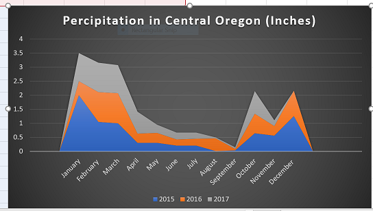
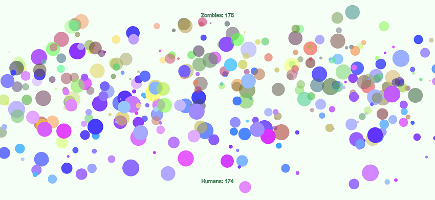

Vivianne Burson
Atmosphereic Sciences at Oregon State University Cascades with a huge passion for Meteorology
Current Research Project: Collecting data that is transmitted from a GPS that is
recording satellite interuptions in order to predict the weather that occurs within the ionsphere.
Click here to view Respoitory
Click Here to View Resume
Data Graph I have put together over a period of time, using my weather reader that has instruments to detect
many aspects of the weather. This graph just shows the percipitation in Central Oregon over the last few years.

Interested in collecting data from severe storms by using instruments to obtain the readings.
Zombie Outbreak Simulator
